| |
texordia |
abstencao |
art. 17 |
ausente |
nao |
obstrucao |
sim |
total |
data |
mapa |
| 1 | MPV Nº 454/2009 - REQUERIMENTO DE RETIRADA DE PAUTA | 0 | 2 | 205 | 282 | 21 | 3 | 513 | 2009-05-27 | 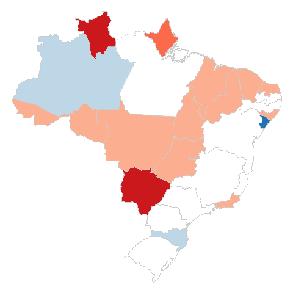 |
| 2 | MPV Nº 454/2009 - VOTAÇÃO DAS EMENDAS UMA A UMA | 1 | 1 | 158 | 332 | 19 | 2 | 513 | 2009-05-27 | 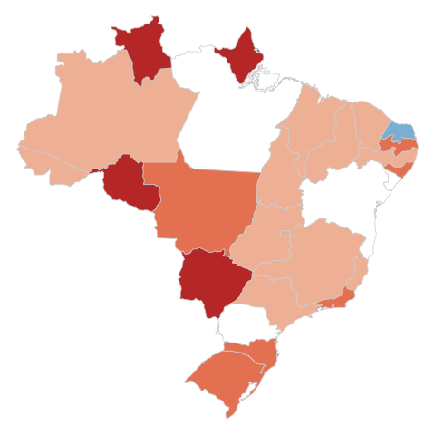 |
| 3 | MPV Nº 454/2009 - REQUERIMENTO DE RETIRADA DE PAUTA | 1 | 2 | 215 | 272 | 20 | 3 | 513 | 2009-05-26 |  |
| 4 | MPV Nº 459/2009 - DVS - PT - ART. 63 DO PLV | 2 | 1 | 137 | 148 | 1 | 224 | 513 | 2009-05-20 | 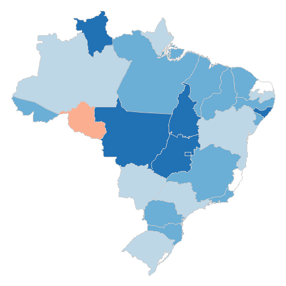 |
| 5 | PEC Nº 22/1999 - SUBSTITUTIVO - PRIMEIRO TURNO | 1 | 1 | 121 | 15 | 0 | 375 | 513 | 2009-05-20 | 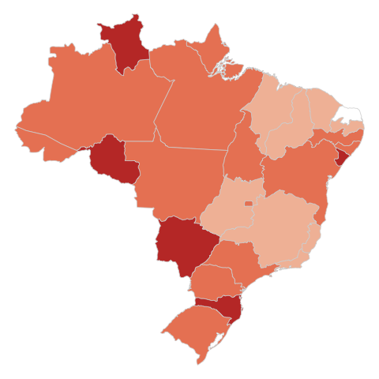 |
| 6 | PL Nº 836/2003 - SUBEMENDA SUBSTITUTIVA DE PLENÁRIO | 2 | 1 | 123 | 79 | 0 | 307 | 512 | 2009-05-19 | 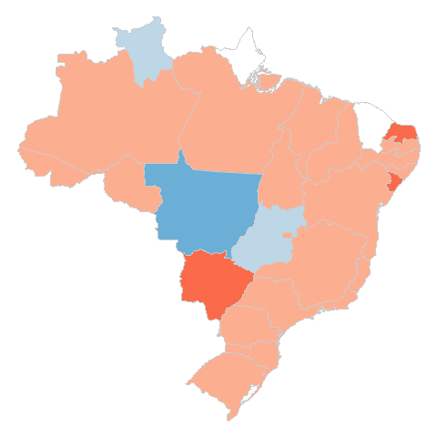 |
| 7 | PL Nº 836/2003 - DVS - PPS - EMENDA Nº 5 | 7 | 1 | 172 | 32 | 0 | 300 | 512 | 2009-05-19 | 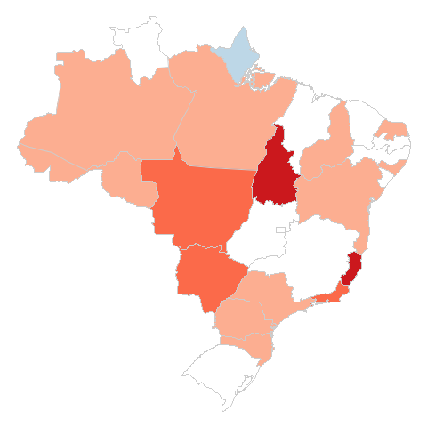 |
| 8 | MPV Nº 458/2009 - RETIRADA DE PAUTA | 2 | 1 | 175 | 266 | 58 | 11 | 513 | 2009-05-13 | 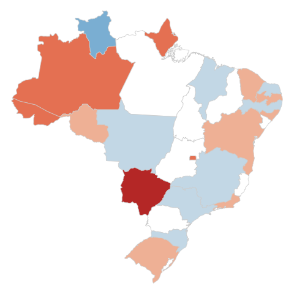 |
| 9 | MPV Nº 458/2009 - DVS - DEM - INCISO II ART.5º DO PLV | 3 | 1 | 136 | 94 | 0 | 279 | 513 | 2009-05-13 |  |
| 10 | MPV Nº 458/2009 - DVS - PSDB - EXPR."ANTERIOR A .... DE 2004" CONST.IN | 0 | 1 | 143 | 74 | 0 | 295 | 513 | 2009-05-13 | 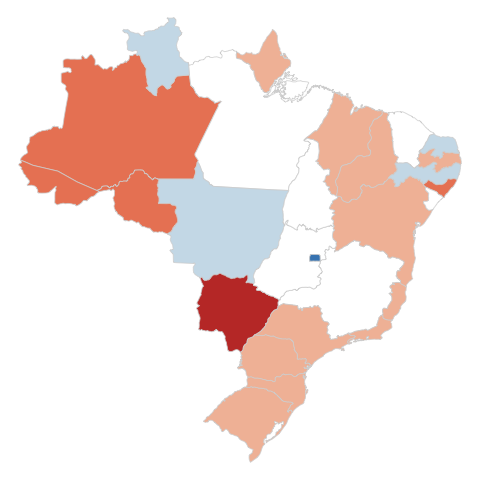 |
| 11 | MPV Nº 458/2009 - DVS - PPS - EMENDA 100 | 0 | 1 | 164 | 261 | 0 | 87 | 513 | 2009-05-13 | 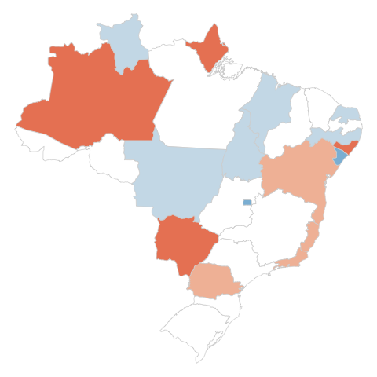 |
| 12 | MPV Nº 458/2009 - DVS - DEM - §1º ART.12 PLV(EM DECORRÊNCIA, OS §§ 2º | 1 | 1 | 143 | 97 | 2 | 269 | 513 | 2009-05-13 | 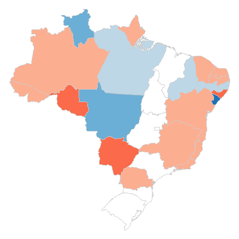 |
| 13 | MPV Nº 457/2009 - DVS DEM - EXPRESSÃO "NO MÍNIMO" INC. I ART 98 DA LE | 0 | 1 | 201 | 104 | 0 | 207 | 513 | 2009-05-12 | 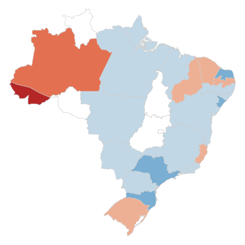 |
| 14 | MPV Nº 457/2009 - DVS - DEM - EXP "NO MÍNIMO" INC. I ART.98 LEI 11196/ | 1 | 1 | 286 | 20 | 37 | 168 | 513 | 2009-05-07 |  |
| 15 | PL Nº 451/1995 - REQUERIMENTO DE ADIAMENTO DA VOTAÇÃO POR 2 SESSÕES | 3 | 1 | 163 | 267 | 16 | 63 | 513 | 2009-05-06 | 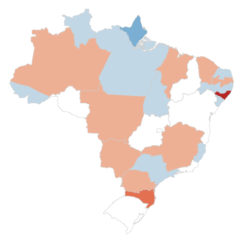 |
| 16 | PLP Nº 59/1999 - SUBSTITUTIVO DA CCJC | 2 | 1 | 171 | 0 | 0 | 339 | 513 | 2009-05-05 |  |
| 17 | PLP Nº 217/2004 - REQUERIMENTO DE URGÊNCIA | 2 | 1 | 160 | 5 | 0 | 345 | 513 | 2009-05-05 | 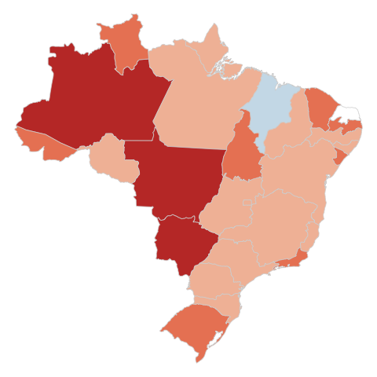 |
| 18 | PLP Nº 217/2004 - PROJETO DE LEI COMPLEMENTAR | 1 | 1 | 122 | 0 | 0 | 389 | 513 | 2009-05-05 | 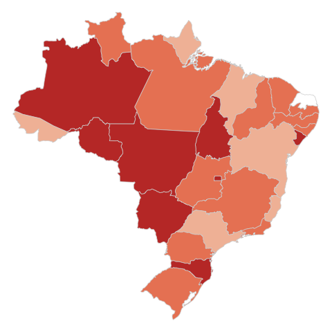 |
| 19 | MPV Nº 457/2009 - DVS - DEM - EXP. "NO MÍNIMO" INC. I ART.98 LEI 11196 | 0 | 1 | 302 | 25 | 22 | 162 | 512 | 2009-04-30 | 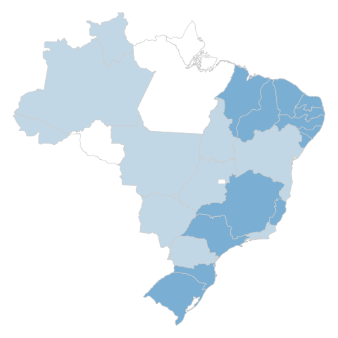 |
| 20 | MPV Nº 457/2009 - REQUERIMENTO DE ADIAMENTO DA DISCUSSÃO POR 1 SESSÃO | 1 | 1 | 185 | 269 | 19 | 37 | 512 | 2009-04-29 |  |
| 21 | MPV Nº 457/2009 - PARECER DO RELATOR PELA ADMISSIBILIDADE | 1 | 1 | 204 | 6 | 30 | 270 | 512 | 2009-04-29 | 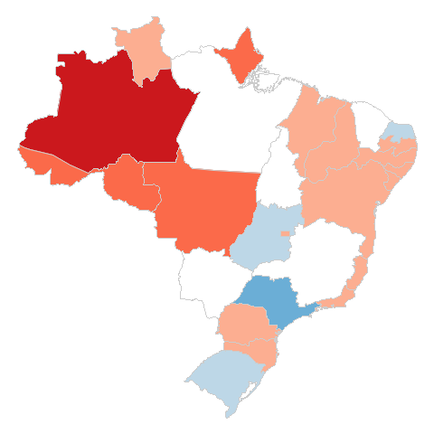 |
| 22 | MPV Nº 457/2009 - DVS - DEM - EMENDA 12 | 0 | 1 | 215 | 232 | 36 | 28 | 512 | 2009-04-29 | 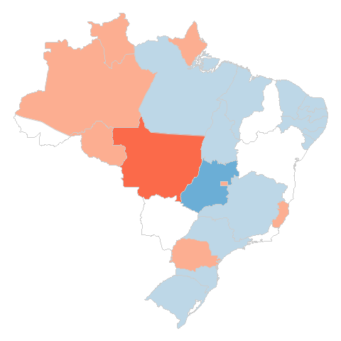 |
| 23 | MPV Nº 455/2009 - DVS - DEM - EMENDA Nº 19 | 2 | 1 | 166 | 222 | 0 | 121 | 512 | 2009-04-22 | 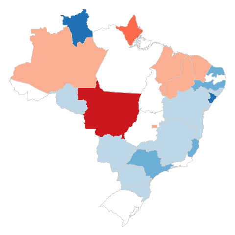 |
| 24 | MPV Nº 453/2009 - DVS - DEM - EMENDA 10 | 1 | 1 | 89 | 363 | 0 | 58 | 512 | 2009-04-15 | 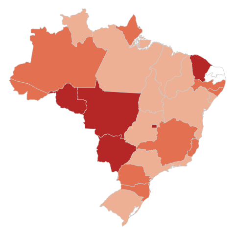 |
| 25 | MPV Nº 452/2008 - PROJETO DE LEI DE CONVERSÃO | 0 | 1 | 132 | 103 | 1 | 274 | 511 | 2009-04-14 | 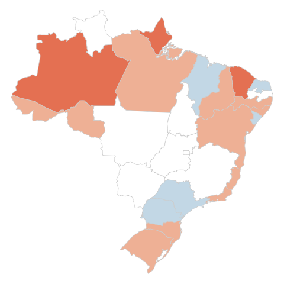 |
| 26 | MPV Nº 452/2008 - DVS-PSDB-EXP"AMPLIAÇÃO DE CAPACIDADE" §5ºART.10 LEI | 0 | 1 | 110 | 109 | 1 | 290 | 511 | 2009-04-14 | 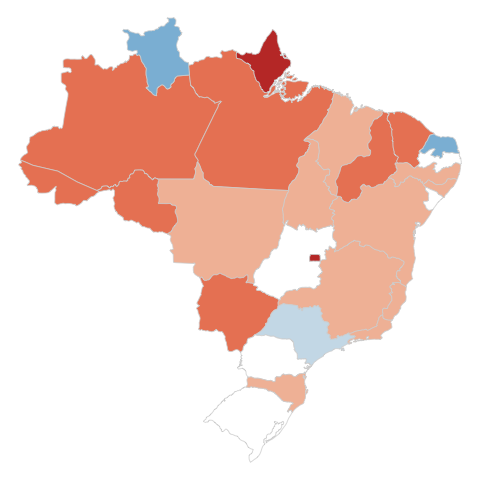 |
| 27 | MPV Nº 451/2008 - REQUERIMENTO DE RETIRADA DE PAUTA | 1 | 1 | 209 | 249 | 43 | 9 | 512 | 2009-04-07 | 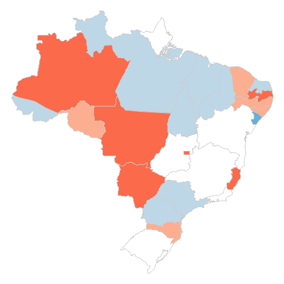 |
| 28 | MPV Nº 451/2008 - DVS - PPS - EXP "A CONCESSÃO...EMPREGADOS" §1º ART.6 | 1 | 1 | 206 | 181 | 0 | 123 | 512 | 2009-04-07 | 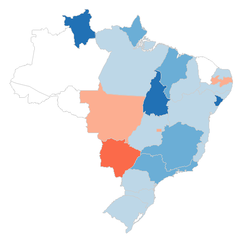 |
| 29 | MPV Nº 451/2008 - DVS - PSDB - ARTIGO 10 DO PLV | 1 | 1 | 176 | 70 | 0 | 264 | 512 | 2009-04-07 | 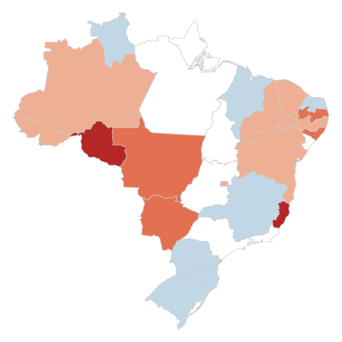 |
| 30 | MPV Nº 451/2008 - DVS-DEM-EXP"VEDADA..DIREITOS" §2º ART.3º LEI 6194/74 | 0 | 1 | 176 | 131 | 1 | 203 | 512 | 2009-04-07 | 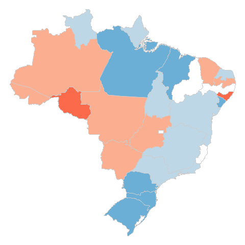 |
{kind=link}
{kind=link}
{kind=link}
{kind=link}
{kind=link}
{kind=link}
{kind=link}
{kind=link}
{kind=link}
{kind=link}
{kind=link}
{kind=link}
{kind=link}
{kind=link}
{kind=link}
{kind=link}
{kind=link}
{kind=link}
{kind=link}
{kind=link}
{kind=link}
{kind=link}
{kind=link}
{kind=link}
{kind=link}